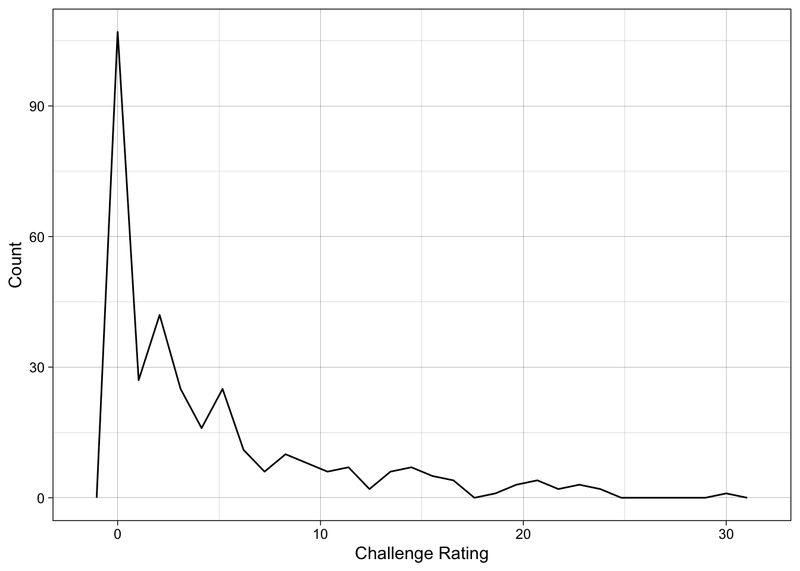
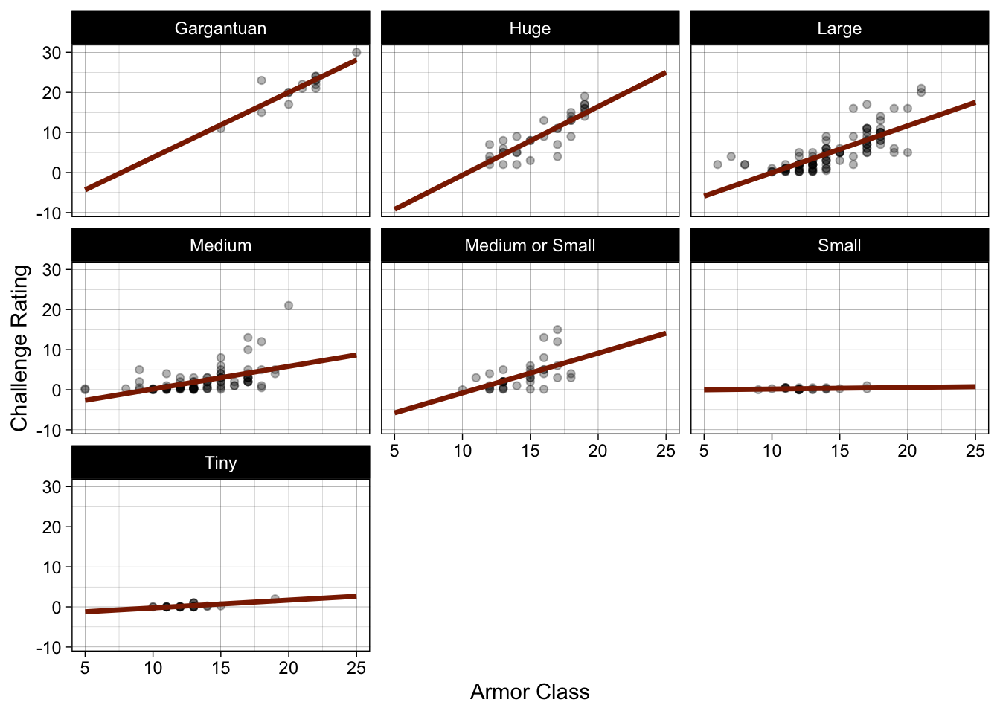
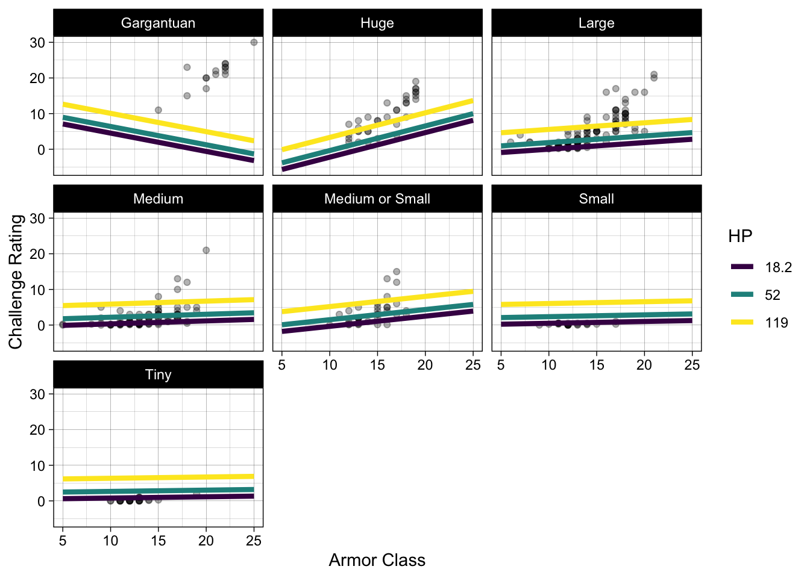
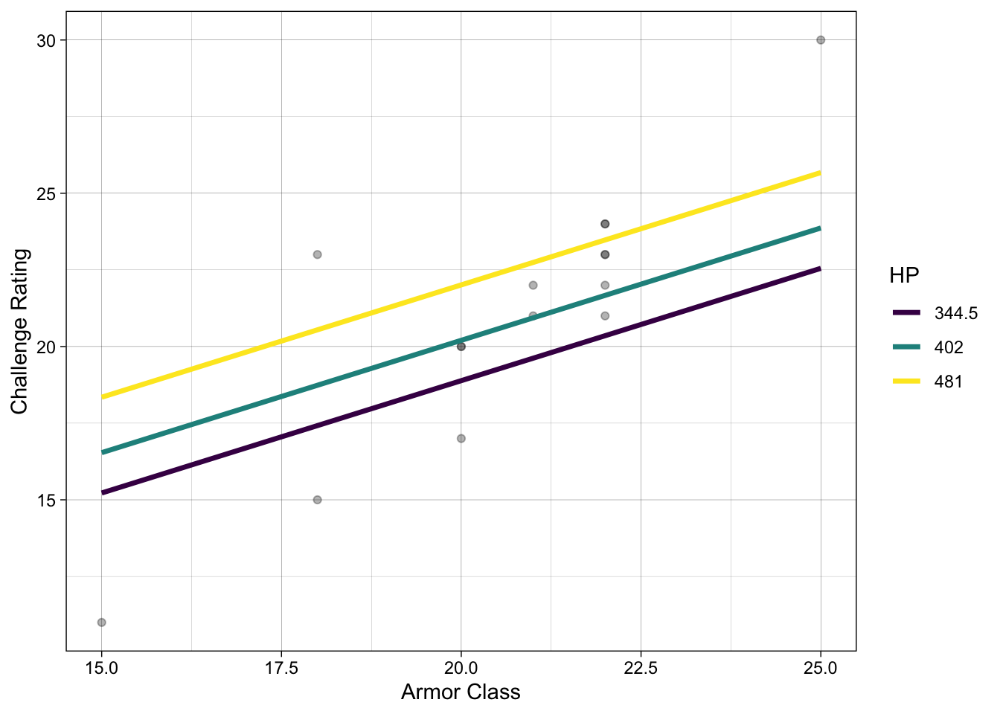

library(tidyverse)
library(broom)
library(ggeffects)
theme_set(theme_linedraw())
monsters <- readr::read_csv('https://raw.githubusercontent.com/rfordatascience/tidytuesday/main/data/2025/2025-05-27/monsters.csv')
monsters <- monsters |> mutate(size = factor(size))Introduction
For this post, I worked with a data set of 330 monsters from Dungeons and Dragons, accessed from the Tidy Tuesday github repository. https://github.com/rfordatascience/tidytuesday/blob/main/data/2025/2025-05-27/readme.md. The data set contains 33 variables; the variables relevant to this post are name, cr, size, ac, and hp_number. name is the monster’s name (like Awakened Tree or Purple Worm), cr is the monster’s challenge rating (how difficult it is to defeat in battle), size is the monster’s size (in relative categories), ac is the monster’s armor class (how difficult it is to hit), and hp_number is the the amount of health that the monster has.
In exploring this data set, I was interested in looking at the relationships between monsters’ challenge ratings and their other stats.
To Begin My Adventure
I wanted to start my exploration simply, by looking at the distribution of challenge rating across the data.
ggplot(monsters, aes(x = cr)) +
geom_freqpoly() +
labs(x = "Challenge Rating", y = "Count")`stat_bin()` using `bins = 30`. Pick better value `binwidth`.
The above frequency plot shows what I would expect: that there are more monsters of lower challenge ratings and less of higher. This makes sense, as from an adventure standpoint, there would be more use for easier to fight monsters than for very difficult bosses.
Challenge rating is provided to players within the game handbook, but it would be useful to have the ability to predict challenge rating given a monster’s stats, especially if one was interested in creating original monsters. This is where I took my exploration next, towards developing a model to predict challenge rating.
I started with using a monster’s size and armor class (and an interaction term between the two) to predict challenge rating.
cr_mod <- lm(cr ~ size + ac + size:ac, monsters)
cr_mod |> glance()# A tibble: 1 × 12
r.squared adj.r.squared sigma statistic p.value df logLik AIC BIC
<dbl> <dbl> <dbl> <dbl> <dbl> <dbl> <dbl> <dbl> <dbl>
1 0.803 0.795 2.63 99.0 5.57e-103 13 -780. 1590. 1647.
# ℹ 3 more variables: deviance <dbl>, df.residual <int>, nobs <int>The above table shows this model has an adjusted r-squared of 0.795, meaning that the model explains 79.5% of the variation in challenge rating. That’s not bad! Let’s visualize.
pred_cr <- ggpredict(cr_mod, terms = c("ac",
"size")) |>
as.data.frame(terms_to_colnames = TRUE) |>
as_tibble()
ggplot(pred_cr, aes(y = predicted, x = ac)) +
facet_wrap(~ size) +
geom_point(data = monsters, aes(y = cr), alpha = 0.3) +
geom_line(color = "orangered4", linewidth = 1.2) +
scale_color_viridis_d() +
labs(x = "Armor Class",
y = "Challenge Rating")
This model looks pretty good! But there is still some variation left unexplained and a lot of variables left in the data set, so let’s see if we can do better!
The Journey Continues
To expand the model, I decided to add HP in the model and expand the visualization to include it. Each size category will now have three lines each, representing the Q1, median, and Q3 values for HP in the dataset.
crhp_mod <- lm(cr ~ size + ac + size:ac + hp_number, monsters)
crhp_mod |> glance()# A tibble: 1 × 12
r.squared adj.r.squared sigma statistic p.value df logLik AIC BIC
<dbl> <dbl> <dbl> <dbl> <dbl> <dbl> <dbl> <dbl> <dbl>
1 0.961 0.959 1.17 555. 2.10e-212 14 -512. 1057. 1117.
# ℹ 3 more variables: deviance <dbl>, df.residual <int>, nobs <int>The above table shows that this expanded version of the model has an adjusted r-squared of 0.959, meaning that 95.9% of the variation in challenge rating is explained by this model. Pretty great! So let’s visualize.
pred_crhp <- ggpredict(crhp_mod, terms = c("ac",
"hp_number [threenum]",
"size")) |>
as.data.frame(terms_to_colnames = TRUE) |>
as_tibble()
ggplot(pred_crhp, aes(y = predicted, x = ac)) +
facet_wrap(~ size) +
geom_point(data = monsters, aes(y = cr), alpha = 0.3) +
geom_line(aes(color = hp_number), linewidth = 1.5) +
scale_color_viridis_d() +
labs(x = "Armor Class",
y = "Challenge Rating",
color = "HP")
Looks great! Except… hold on… what’s happening with the Gargantuan monsters? The data seems to show a clear positive trend, so what’s with the negative line slope? Let’s look at the monsters closer.
monsters_garg <- monsters |>
filter(size == "Gargantuan")
monsters_garg |> select(name, ac, hp_number) |> slice(1:15) |> arrange(hp_number) |> knitr::kable()| name | ac | hp_number |
|---|---|---|
| Purple Worm | 18 | 247 |
| Roc | 15 | 248 |
| Ancient Brass Dragon | 20 | 332 |
| Ancient White Dragon | 20 | 333 |
| Dragon Turtle | 20 | 356 |
| Ancient Black Dragon | 22 | 367 |
| Ancient Copper Dragon | 21 | 367 |
| Ancient Green Dragon | 21 | 402 |
| Ancient Bronze Dragon | 22 | 444 |
| Ancient Silver Dragon | 22 | 468 |
| Ancient Blue Dragon | 22 | 481 |
| Kraken | 18 | 481 |
| Ancient Red Dragon | 22 | 507 |
| Ancient Gold Dragon | 22 | 546 |
| Tarrasque | 25 | 697 |
It looks like the problem lies with the HP. The Q1, median, and Q3 values represented by the lines on the model are not values of HP present within the Gargantuan monster category. This explains the problem with the lines. So let’s make another plot that represents the gargantuan monster category better.
crgarg_mod <- lm(cr ~ ac + hp_number, monsters_garg)
pred_garg <- ggpredict(crgarg_mod, terms = c("ac",
"hp_number [threenum]")) |>
as.data.frame(terms_to_colnames = TRUE) |>
as_tibble()
ggplot(pred_garg, aes(y = predicted, x = ac)) +
geom_point(data = monsters_garg, aes(y = cr), alpha = 0.3) +
geom_line(aes(color = hp_number), linewidth = 1.2) +
scale_color_viridis_d() +
labs(x = "Armor Class",
y = "Challenge Rating",
color = "HP")
Conclusion
My conclusions from this data exploration journey have more to do with data visualization techniques than dungeons and dragons. I have seen now possible ways that visualizations can be skewed in much the same way that general summary statistics can be. However, exploring this data has shown me the measures that most likely contribute to the challenge rating of dungeons and dragons monsters. Specifically, a high armor class and high HP contribute to a higher challenge rating.
Class Connections
For this blog post, I made use of visualization techniques to show the linear model I built from my data. By using ggpredict, I was able to draw lines showing the predicted values for challenge rating based on my chosen predictors. I made use of faceting and color differentiation to appropriately show the differing lines of best fit.